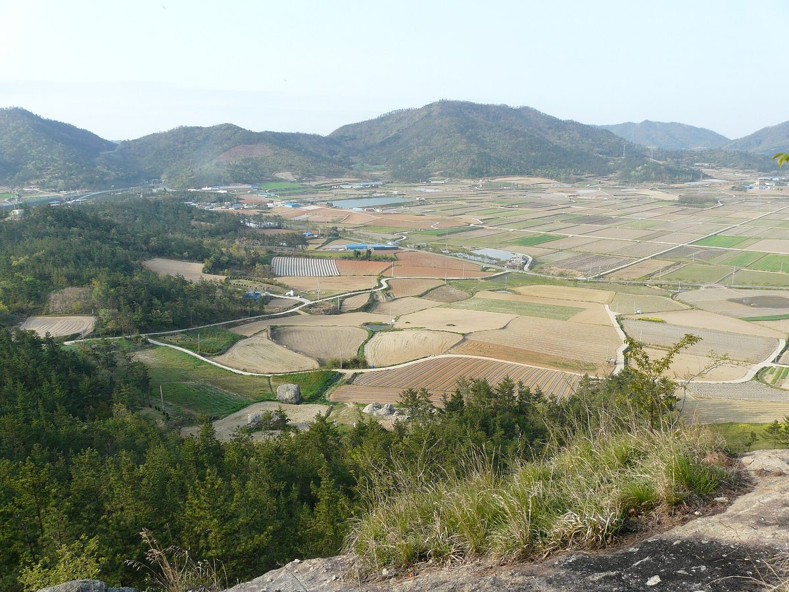

진도 군유 간척지 41MW 태양광 '임대 가능' 회신 논란에 부군수 "개인 땅인 줄 알았다"…"다시 입찰·계약해야, 허가도 안 나"

2025년 12월 건설과 '조건부 가능' 회신 뒤 사업자 허가 신청, 부군수 "부서 간 미스, 과장들 보고 없었다"…기존 영농법인 임대 2028년 말까지, 최종 의견서에 임차권 어떻게 반영됐는지는 설명 없어
전남 진도군 소유 간척지에서 추진되는 41MW 규모 민간 태양광발전사업을 둘러싼 '임대 가능' 회신 논란과 관련해 김미순 진도부군수가 "일반적인 개인 소유 땅 같은 건 줄 알았다"며 군유지 관리 문제를 뒤늦게 알았다고 밝혔다. 이 사업은 총사업비 약 410억 원 규모로, 대상 부지에는 5개 영농조합법인의 임대계약이 2028년 말까지 남아 있지만 군 건설과가 2025년 12월 태양광 설치용 토지 임대가 조건부로 가능하다는 취지로 회신했고, 이후 사업자가 발전사업 허가를 신청했다. 군 경제에너지과가 작성한 2026년 10월 8일 자 발전사업 허가 심의 의견서에는 부군수와 군수 결재란에 손으로 쓴 표시가 남아 있고, 건설과의 기존 임대계약 검토 내용도 함께 붙어 있는 것으로 드러났다. 김 부군수는 당시 인허가가 아니라 의견만 내는 절차로 알았고, 건설과와 경제에너지과 사이에 업무상 착오가 있었으며 담당 과장들의 보고가 없어 내용을 몰랐다고 설명했는데, 그는 최초 회신 이후인 이듬해 1월 부임했다. 그는 이어 앞으로 다시 입찰과 계약을 거쳐야 하고 허가도 아직 나지 않았다며 민간사업자의 군유지 사용권이 확정된 것은 아니라고 말했다. 다만 부군수 재임 중 작성된 최종 의견서에 기존 임차인의 권리와 군유지 사용 제한이 어떻게 반영됐는지는 아직 설명되지 않았고, 진도군수와 담당 부서, 사업자, 영농조합법인의 입장은 나오지 않았다.
시민에너지 관점
부군수 말대로 사용권이 확정되지 않았다면, 지금이 군민 재산인 간척지를 누구에게 어떤 조건으로 맡길지 처음부터 공개적으로 정할 기회다. 스코틀랜드는 2015년 공동체역량강화법으로 지역 공동체 단체가 공공기관 소유 토지·건물의 임차나 이전을 직접 요청할 수 있게 하고, 공공기관이 합리적인 이유 없이는 이를 거절하지 못하도록 했다. 재입찰이 사업을 늦춘다는 걱정이 있겠지만, 부서끼리도 내용을 나누지 못한 채 진행된 절차를 그대로 두면 기존 경작자와의 분쟁이 더 큰 지연을 부른다. 진도군은 회신과 의견서의 검토 경위를 공개하고, 다시 입찰한다면 기존 경작 법인과 지역 주민 조직이 직접 사업자로 나서거나 지분을 가질 수 있는 조건을 공고에 담아야 한다.
출처: 폴리뉴스 2026-11-03 오승근 원문 보기
珍島の郡有干拓地41MW太陽光「賃貸可能」回答問題で副郡守「個人の土地だと思った」…「改めて入札・契約が必要、許可も出ていない」
2025年12月に建設課が「条件付き可能」と回答した後に事業者が許可申請、副郡守「部署間のミス、課長から報告がなかった」…既存の営農法人の賃貸は2028年末まで、最終意見書に賃借権がどう反映されたかは説明なし
全羅南道珍島（チンド）郡が所有する干拓地で進められている41MW規模の民間太陽光発電事業をめぐる「賃貸可能」回答問題について、金美順（キム・ミスン）珍島副郡守は「一般的な個人所有の土地のようなものだと思っていた」と述べ、郡有地管理の問題を後になって把握したと明らかにした。この事業は総事業費約410億ウォン規模で、対象地には5つの営農組合法人の賃貸契約が2028年末まで残っているが、郡の建設課が2025年12月、太陽光設置のための土地賃貸は条件付きで可能との趣旨で回答し、その後事業者が発電事業許可を申請した。郡の経済エネルギー課が作成した2026年10月8日付の発電事業許可審議意見書には、副郡守と郡守の決裁欄に手書きの記載が残り、建設課による既存の賃貸契約の検討内容も添付されていたことが分かった。金副郡守は、当時は許認可ではなく意見を出すだけの手続きだと理解しており、建設課と経済エネルギー課の間で業務上の行き違いがあり、担当課長から報告がなかったため内容を知らなかったと説明したが、同氏が着任したのは最初の回答の後の翌年1月だった。同氏はさらに、今後改めて入札と契約を経る必要があり、許可もまだ出ていないとして、民間事業者の郡有地使用権が確定したわけではないと述べた。ただ、副郡守の在任中に作成された最終意見書に既存の賃借人の権利や郡有地の使用制限がどう反映されたのかはまだ説明されておらず、珍島郡守や担当部署、事業者、営農組合法人の立場は示されていない。
市民エネルギーの視点
副郡守の言うとおり使用権が確定していないのなら、今こそ郡民の財産である干拓地を誰にどんな条件で任せるのかを、最初から公開の場で決め直す機会だ。スコットランドは2015年のコミュニティ・エンパワーメント法で、地域の共同体団体が公的機関の所有する土地や建物の賃借・移転を直接申請できるようにし、公的機関が合理的な理由なしにはこれを拒めないようにした。再入札が事業を遅らせるという懸念もあるだろうが、部署間でさえ情報を共有できないまま進んだ手続きをそのままにすれば、既存の耕作者との紛争がより大きな遅れを招く。珍島郡は回答と意見書の検討経緯を公開し、再入札をするのであれば、既存の耕作法人や地域の住民組織が自ら事業者となるか持ち分を持てる条件を公告に盛り込むべきだ。
出典: ポリニュース 2026-11-03 オ・スングン 原文を読む
珍岛郡有围垦地41MW太阳能"可租用"回复争议，副郡守称"以为是私人土地"…"还须重新招标签约，许可也未发放"
2025年12月建设科回复"有条件可行"后企业申请许可，副郡守称"部门之间出了差错，科长们没有汇报"…现有营农法人租约至2028年底，最终意见书如何反映承租权尚无说明
围绕全罗南道珍岛郡所有的围垦地上推进的41MW民间太阳能发电项目"可租用"回复引发的争议，珍岛副郡守金美顺表示"以为是一般的私人所有土地"，承认事后才了解郡有土地的管理问题。该项目总投资约410亿韩元，项目用地上5家营农组合法人的租赁合同有效期至2028年底，但郡建设科于2025年12月回复称，用于安装太阳能设施的土地租赁有条件可行，此后企业申请了发电事业许可。郡经济能源科2026年10月8日制作的发电事业许可审议意见书上，副郡守和郡守的审批栏留有手写标记，并附有建设科对现有租赁合同的审查内容。金副郡守解释说，当时以为只是提出意见而非审批程序，建设科与经济能源科之间出现了工作失误，主管科长没有汇报，因此不了解情况；金副郡守是在最初回复之后的次年1月到任的。金副郡守还表示，今后还须重新招标和签约，许可也尚未发放，民间企业对郡有土地的使用权并未确定。不过，副郡守任内制作的最终意见书如何反映现有承租人的权利和郡有土地的使用限制，目前仍无说明，珍岛郡守、主管部门、企业和营农组合法人也未表明立场。
市民能源视角
如果正如副郡守所说使用权尚未确定，那么现在正是从头公开决定把属于郡民的围垦地以什么条件交给谁的机会。苏格兰通过2015年《社区赋权法》，允许地方社区团体直接申请租用或接管公共机构所有的土地和建筑，公共机构没有合理理由不得拒绝。有人会担心重新招标拖慢项目，但如果放任连部门之间都未能共享信息的程序继续下去，与现有耕作者的纠纷只会造成更大的延误。珍岛郡应公开回复和意见书的审查经过，若重新招标，应在公告中写明现有耕作法人和当地居民组织可以直接成为项目主体或持有股份的条件。
来源: Polinews 2026-11-03 吴承根 查看原文
Jindo deputy governor says "I thought it was private land" in row over county reply clearing 41MW solar lease on reclaimed land; "it must be re-tendered and re-contracted, and no licence has been issued"
A developer applied for a licence after the county's construction division replied in December 2025 that a lease was conditionally possible; the deputy governor cites a mix-up between departments and says division heads never reported. Farm corporations' leases run to the end of 2028, and how the final opinion treated their rights is still unexplained
Kim Mi-soon, deputy governor of Jindo County in South Jeolla, said the county-land problem only came to the deputy governor's attention late in the dispute over the county's reply that county-owned reclaimed land could be leased for a 41MW private solar project, explaining that the plot had been taken for "ordinary privately owned land." The project is budgeted at about 41 billion won, and although five farming corporations hold leases on the site until the end of 2028, the county's construction division replied in December 2025 that leasing the land for solar installations was possible under conditions, after which the developer applied for a generation licence. An opinion on the licence application dated October 8, 2026 and prepared by the county's economy and energy division carries handwritten marks in the approval boxes for the deputy governor and the county governor, and attaches the construction division's review of the existing leases. Kim said the procedure had been understood at the time as merely giving an opinion rather than granting a permit, that there had been a mix-up between the construction and the economy and energy divisions, and that the details were unknown because the division heads never reported; Kim took up the post in January, after the first reply had been sent. Kim added that the land would have to go through tendering and contracting again and that no licence had yet been issued, so the private developer's right to use the county land was not settled. How the final opinion, written during Kim's tenure, dealt with the existing tenants' rights and the restrictions on using county land has not yet been explained, and the county governor, the departments involved, the developer and the farming corporations have not stated their positions.
Citizen Energy View
If, as the deputy governor says, the right to use the land is not settled, this is the moment to decide openly and from scratch who should be entrusted with reclaimed land that belongs to all county residents, and on what terms. Scotland's Community Empowerment (Scotland) Act 2015 lets community bodies ask public authorities directly to lease or take over land and buildings they own, and authorities must agree unless they have reasonable grounds to refuse. Some will worry that re-tendering slows the project, but leaving in place a process in which even county departments failed to share information invites disputes with the existing farmers that would cause far longer delays. Jindo County should publish how the reply and the opinion were reviewed and, if it re-tenders, write into the notice terms that allow the existing farming corporations and local residents' organisations to become the developer themselves or to hold a stake.
Source: Polinews 2026-11-03 Oh Seung-geun Read the original